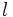
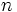
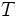

![[Main Page]](../../rsrc/bci2000logo.svg)
P300ClassifierMethods
UserReference
Load BCI2000 Data Files
Once the BCI2000 data files are check for compatibility, signals are extracted either from each training or testing data file and are arranged in a matrix form as:
![{\mathbf{X_{i}^{k}(n)}} =
\begin{bmatrix}
x_{1}^{1}(0) & x_{1}^{1}(1) & \cdots & x_{1}^{1}(p-1) & \cdots & x_{1}^{l}(0) & x_{1}^{l}(1) & \cdots & x_{1}^{l}(p-1) \\
x_{2}^{1}(0) & x_{2}^{1}(1) & \cdots & x_{2}^{1}(p-1) & \cdots & x_{2}^{l}(0) & x_{2}^{l}(1) & \cdots & x_{2}^{l}(p-1) \\
\vdots & \vdots & \cdots &\vdots & \cdots & \vdots & \vdots & \cdots & \vdots \\
x_{m}^{1}(0) & x_{m}^{1}(1) & \cdots & x_{m}^{1}(p-1) & \cdots & x_{m}^{l}(0) & x_{m}^{l}(1) & \cdots & x_{m}^{l}(p-1) \\
\end{bmatrix}](../images/math/c/1/c/c1c22f4d3b4154a4fb5273841511a221.png)
for

being the total number of observations (stimuli),  the total number of channels, and the total number of samples recorded for each channel.  is the recording stimulus time, and is the sampling frequency.
is the recording stimulus time, and is the sampling frequency.
Consider the following example to help you understand the previous mathematical notation. A BCI data set is recorded during a P300 Speller task using a 6 by 6 matrix of characters. Each row and column of the matrix is randomly intensified resulting in 12 different stimuli. The sets of 12 intensification are repeated 15 times for each intended character to spell. For this example, the subject pretend to spell the word "SEND", a total of 4 characters.

Assume that the data set is recorded from 8 channels at 256 Hz, the elapsed time from the start to the end of each intensification is 800 ms, and the Decimation Frequency provided by the investigator is 20 Hz. For this example, , , and . The total number of columns (variables) of the above matrix is .
Get P300 Responses
In this step, it is computed the corresponding time samples of a time Response Window in (ms). Following the above example, assume that the time Response Window specified by the investigator is [0 800] ms.
Signals of interest are extracted from and are defined
only for  .
.
The coefficients  of the Moving Average (MA) filter are found as
of the Moving Average (MA) filter are found as
for where  is the filter order. The filter order can be computed from the sampling frequency and the provided decimation frequency as
is the filter order. The filter order can be computed from the sampling frequency and the provided decimation frequency as
Thus, the impulse response can be computed as
To filter the selected signals, each channel  and each observation (stimulus)
and each observation (stimulus)  of the matrix is convolved with the impulse response . The next equation shows how to filter a signal for channel and observation
of the matrix is convolved with the impulse response . The next equation shows how to filter a signal for channel and observation
The output , result of the convolution between all the extracted signals —for channels and observations — and the impulse response, is downsampled by a factor .
Generate Feature Weights for a Linear Model using Stepwise Linear Discriminant Analysis (SWLDA)
Consider a data vector of observations, a vector of  model parameters (weights) to estimate, and a matrix representing the final linear model. This inverse problem can be written as
An approximate solution to this problem can be found by minimizing the difference (residuals) between the actual data and .
The least squares or 2-norm solution has been adopted to minimize these residuals.
The symbol  represents the transpose of the matrix . Note that least squares solution is only valid for overdetermined systems (); there must be in the model more observations than variables. If the residuals have a normal distribution, the least squares corresponds to the maximum likelihood criterion.